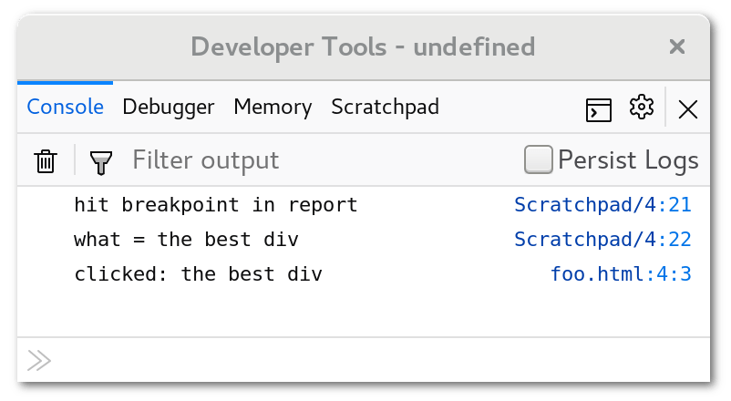

This page shows how you can try out the Debugger API yourself using Firefox’s Scratchpad. We use Debugger to set a breakpoint in a function, and then evaluate an expression whenever it is hit.
This tutorial was tested against Firefox 58 Beta and Nightly. It does not work in Firefox 57.
Since the Debugger API is only available to privileged JavaScript code, you’ll need to use the Browser Content Toolbox to try it out. To do this, open the Firefox developer tools, click on the options gear at the upper right of the toolbox, and make sure that both “Enable browser chrome and add-on debugging toolboxes” and “Enable remote debugging” are checked. These are located at the bottom right of the options panel; you may need to scroll to see them. Once they’re checked, you can close the developer tools.
Save the following text to an HTML file:
<div onclick="report('the best div');">Click me!</div>
<div onclick="report('another great div');">Or me!</div>
<script>
function report(what) {
console.log('clicked: ' + what);
}
</script>Visit the HTML file in your browser, and open the Browser Content Toolbox by opening the Firefox menu, choosing “Web Developer”, and then “Browser Content Toolbox”. If that item doesn’t appear in the “Web Developer” menu, make sure you checked both boxes to enable the Browser Content Toolbox as explained in Step 1.
Our example code is long enough that the best way to run it is to use the Scratchpad panel, which is not enabled by default. To enable it, click on the options gear at the upper right of the Browser Content Toolbox, and make sure the “Scratchpad” box in the “Default Developer Tools” section the left is checked. The Scratchpad panel should appear at the top of the Toolbox alongside the Console, Debugger, and Memory panels.
Click on the Scratchpad panel and enter the following code:
Components.utils.import("resource://gre/modules/jsdebugger.jsm");
Components.utils.import("resource://gre/modules/Console.jsm");
// This defines 'Debugger' in this Scratchpad;
// it doesn't actually start debugging anything.
addDebuggerToGlobal(this);
// Create a 'Debugger' instance.
var dbg = new Debugger;
// Make the tab's top window a debuggee, and get a
// Debugger.Object referring to the window.
var windowDO = dbg.addDebuggee(tabs[0].content);
// Get a Debugger.Object referring to the window's `report`
// function.
var reportDO = windowDO.getOwnPropertyDescriptor('report').value;
// Set a breakpoint at the entry point of `report`.
reportDO.script.setBreakpoint(0, {
hit: function (frame) {
console.log('hit breakpoint in ' + frame.callee.name);
console.log('what = ' + frame.eval('what').return);
}
});
console.log('Finished setting breakpoint!');In the Scratchpad, ensure that no text is selected, and press the “Run” button.
Now, click on the text that says “Click me!” in the web page. This runs the div element’s onclick handler. When control reaches the start of the report function, Debugger calls the breakpoint handler’s hit method, passing a Debugger.Frame instance. The hit method logs the breakpoint hit to the browser content toolbox’s console. Then it evaluates the expression what in the given stack frame, and logs its result. The toolbox’s console now looks like this:

You can also click on the text that says “Or me!”, to see report called from a different handler.
If Debugger is unable to find the report function, or the console output does not appear, evaluate the expression tabs[0].content.document.location in the console to make sure that tabs[0] indeed refers to the HTML file you visited. If you have more than one tab visiting a file: URL, they all share a single content process, so you may need to use a different element of the array as the debuggee.
Press “Run” in the Scratchpad again. Now, clicking on “Click me!” causes the breakpoint hit to be logged twice—one for each Debugger instance.
Multiple Debugger instances can observe the same debuggee. Re-running the code in the Scratchpad creates a fresh Debugger instance, adds the same web page as its debuggee, and then sets a new breakpoint. When you click on the div element, both Debuggers’ breakpoints are hit, and both handlers run.
This shows how any number of Debugger-based tools can observe a single web page simultaneously. In fact, you can use the Browser Content Toolbox’s Debugger panel to set its own breakpoint in report, and it will trigger along with the first two. Keep in mind, however, that when multiple Debuggers share a debuggee, the order in which their handlers run is not specified. If more than one tool tries to influence the debuggee’s behavior, their combined behavior could be unpredictable.
Close the web page and the Browser Content Toolbox.
Since both the Scratchpad’s global object and the debuggee window are now gone, the Debugger instances will be garbage collected, since they can no longer have any visible effect on Firefox’s behavior. The Debugger API tries to interact with garbage collection as transparently as possible; for example, if both a Debugger.Object instance and its referent are not reachable, they will both be collected, even while the Debugger instance to which the shadow belonged continues to exist.